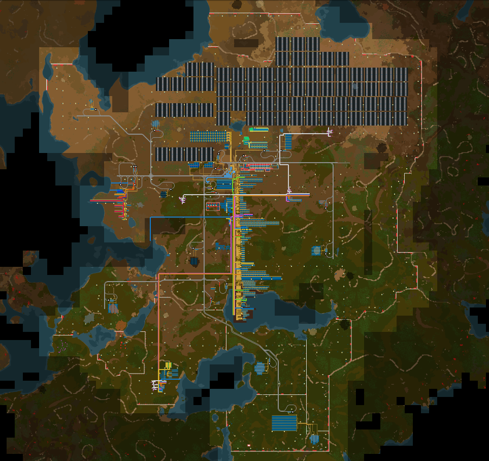

Nauvis
Hub
The Nauvis Hub:
- receives ore and steel beams from mines via train,
- receives from space platforms,
- sends iron and copper to foundries,
- sends items to the main assembly line,
- sends bioflux to the egg spawners,
- sends Holmium and heavy oil barrels to the Holmium Upcycler via train,
- receives ground science from the main assembly line, and
- sends science to the science labs.
The main assembly line proceeds south and scales east. If needed, the west is used for additions that do not make sense to append at the south. This pattern is used elsewhere, though the directions may be changed to fit the environment. The main assembly line contains an array of 16 rocket silos. Rocket silos receive construction materials from the main assembly line, and payload from the logistics network. Fluids are received where they are earliest needed, by pipe. Most products are made available to the logistics network where they are produced, science being the main exception.
To produce non-bulk building materials, a group of machines are attached to the logistics network with requester and passive provider chests. The same is done in a separate group for legendary items. Included in the legendary item area is a productivity module 3 upcycler.
Uranium is processed on-site. Uranium ammo was used for a short period to destroy biter nests, Uranium fuel cells are made available to the logistics network, and legendary Uranium-235 is upcycled by building and recycling nuclear fuel.
Nauvis was powered entirely by solar until fusion became available.
Nauvis is protected by a wall of lasers and roboports. As they became available, Tesla turrets, artillery, and legendary lasers were added.

Holmium Upcycler
The Holmium Upcycler receives Holmium and heavy oil barrels from Fulgora, rock, and some other parts from the main assembly line. It produces and recycles supercapacitors. Legendary superconductors are used to create legendary quality module 3s. The Holmium plates were used to create a couple legendary EM plants.

Symbolic Map
